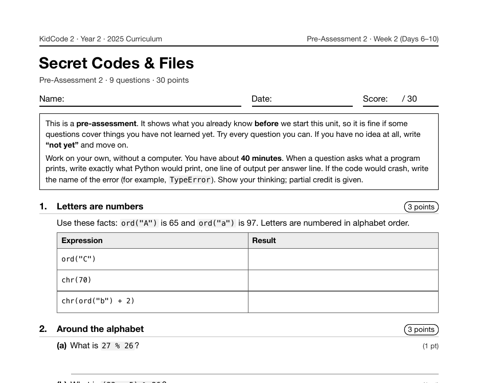

Year 2 · 2025 · Building Complexity
Project 7: Secret Agent Cipher Lab
Secret Agent Cipher Lab opens Year 2 as Project 7, on Day 7. Students learn that letters are numbers (ord() and chr()), wrap around the alphabet with %, and write encrypt(text, shift) and decrypt(text, shift). Both functions are checked with assert tests.
What I taught that week
From the Year 2 curriculum, Week 2: Secret Codes & Files
Day 6: Character Codes & Caesar Shifts. How computers store letters as numbers with ord() and chr(). Shifting letters with % to wrap around the alphabet and looping through strings. Practice: "Letter Shifter".
Day 7: Lab: Secret Agent Cipher Lab. Project 1. Building encrypt(text, shift) and decrypt(text, shift) with assert tests. Swapping coded messages, then a crack-the-code challenge that tries all 25 shifts.
Day 8: Reading Files. Opening files with open() and with, then .read(), .readlines(), and for line in file. File paths, the working folder, and FileNotFoundError. Practice: "Story Reader".
Day 9: Writing & Appending Files. File modes "w" and "a", .write(), newline characters, and why write mode erases old data. Practice: "Diary Logger" adds an entry each run, and "High Score Keeper" remembers scores.
Day 10: Lab: Message Vault. Project 2. Combining the cipher with file reading and writing: save secret messages to a file and unlock them with a password. Swap vaults and try to crack them.
What students built
82 students built a cipher lab. Every submission includes assert tests and a brute-force cracker that tries all 25 shifts. Most do the letter arithmetic with ord() and chr(); the rest build a shifted alphabet with str.maketrans or look letters up by position in an alphabet string.
One student's program
This is one real submission, shown as the student wrote it apart from the removed name header. It was chosen by a fixed rule rather than for being the best: it is the submission closest to the project's median length among those that ran cleanly and contain nothing that could identify anyone.
def encrypt(text, shift):
result = ""
for ch in text:
if ch.isupper():
result += chr((ord(ch) - ord("A") + shift) % 26 + ord("A"))
elif ch.islower():
result += chr((ord(ch) - ord("a") + shift) % 26 + ord("a"))
else:
result += ch
return result
def decrypt(text, shift):
result = ""
for ch in text:
if ch.isupper():
result += chr((ord(ch) - ord("A") - shift) % 26 + ord("A"))
elif ch.islower():
result += chr((ord(ch) - ord("a") - shift) % 26 + ord("a"))
else:
result += ch
return result
assert encrypt("abc", 1) == "bcd"
assert encrypt("xyz", 3) == "abc"
assert encrypt("Zebra", 1) == "Afcsb"
assert encrypt("Hi 5!", 0) == "Hi 5!"
assert decrypt("Khoor, Zruog!", 3) == "Hello, World!"
assert decrypt(encrypt("Agent Test 007", 11), 11) == "Agent Test 007"
print("All cipher tests passed!")
mission = "Bring the map to the bridge at midnight"
key = 7
print("Codename: Agent Shadow")
coded = encrypt(mission, key)
print("Encrypted mission:", coded)
print("Decrypted mission:", decrypt(coded, key))
print()
print("Rival spy cracking attempt:")
for guess in range(1, 26):
print(f" shift {guess:2d}: {decrypt(coded, guess)}")
if guess == key:
print(" ^^^ that is readable English, the code is broken!")
print("Lesson: only 25 keys means a Caesar cipher is easy to crack.")
A sample run of that program (the input was typed for this page)
All cipher tests passed! Codename: Agent Shadow Encrypted mission: Iypun aol thw av aol iypknl ha tpkupnoa Decrypted mission: Bring the map to the bridge at midnight Rival spy cracking attempt: shift 1: Hxotm znk sgv zu znk hxojmk gz sojtomnz shift 2: Gwnsl ymj rfu yt ymj gwnilj fy rnisnlmy shift 3: Fvmrk xli qet xs xli fvmhki ex qmhrmklx shift 4: Eulqj wkh pds wr wkh eulgjh dw plgqljkw shift 5: Dtkpi vjg ocr vq vjg dtkfig cv okfpkijv shift 6: Csjoh uif nbq up uif csjehf bu njeojhiu shift 7: Bring the map to the bridge at midnight ^^^ that is readable English, the code is broken! shift 8: Aqhmf sgd lzo sn sgd aqhcfd zs lhcmhfgs shift 9: Zpgle rfc kyn rm rfc zpgbec yr kgblgefr shift 10: Yofkd qeb jxm ql qeb yofadb xq jfakfdeq shift 11: Xnejc pda iwl pk pda xnezca wp iezjecdp shift 12: Wmdib ocz hvk oj ocz wmdybz vo hdyidbco shift 13: Vlcha nby guj ni nby vlcxay un gcxhcabn …
The worksheet for this unit
Each unit has a pre- and post-assessment written from the same curriculum. This is the first page of the pre-assessment for the unit this project sits in: Secret Codes & Files (Week 2 (Days 6–10), 9 questions).

Where it fits
Three days later, Message Vault puts this cipher to work on files. The cracker, which shows that 25 keys is no security at all, is a first taste of the "why is this broken?" thinking that Year 3 is built on.
Looking back
This is where testing enters the curriculum, attached to the first functions students write in Year 2. The median Year 2 program is three times the length of the median Year 1 program, and tests like these are part of how students kept longer programs working.